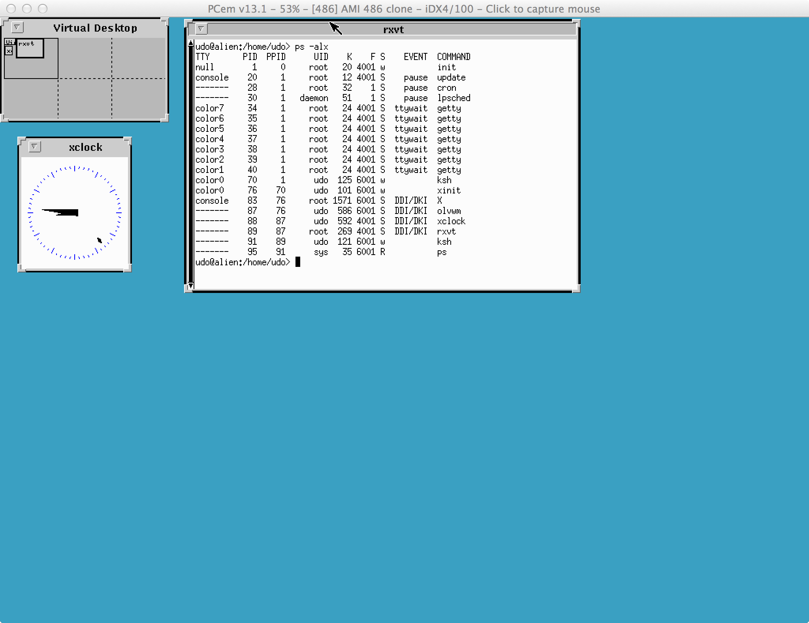

Introduction:
PCem is a very accurate Open Source low-level emulation for 8086/286/386/486/586 PC's from the 80th and 90th, see the PCem project web site. The software can be used on Windows, OSX and Linux systems.
For installation on Windows:
Just download the software and unpack, the archive includes an build executable already.
For installation on Debian based Linux systems:
apt-get install sdl2-dev apt-get install libwxgtk3.0-dev apt-get install libopenal-dev cd ~/pcem ./configure make
For installation on OSX usage of brew is recommended:
brew install sdl2 brew install wxmac brew link wxmac brew install openal-soft cd ~/pcem ./configure make
Configuration:
If one runs PCem the first time the software complains that no ROM's were found, the source archive doesn't include any. So first we need a bunch of ROM's, you'll find them at the Wiki for the fork 86Box.
Please be aware that these BIOS's are copyrighted software from a commercial vendor, we are using THEIR software without formal permission, caveat utilitor!
As the README says, under Linux the software uses ~/.pcem for it's
configuration files, while under OSX and Windows all files are kept in the
extracted ~/pcem directory. For Linux we first need to copy the contents of the
battery backed NV-RAM into place:
cp ~/pcem/nvr/* ~/.pcem/nvr
Then we need the various BIOS ROM's in ~/.pcem/roms or ~/pcem/roms.
For running COHERENT AMI BIOS's are good, so copy the AMI
BIOS files for 286, 386SX, 386DX and 486 into the appropriate ROM directory.
On UNIX systems the filenames must be all lowercase, the downloaded BIOS
files are in several mixed case, correct the filenames while copying.
Besides the machines BIOS's we also need some video BIOS, mda.rom is mandatory, without the BIOS has no character set to display. You also might want ibm_vga.bin and et4000.bin for VGA color consoles and a SVGA color X11 server. The video BIOS files reside in the ROM directory, not some subdirectory, like the machine BIOS files.
PCem also emulates the Adaptec 154x SCSI adapters, the BIOS for the cards
is available
here.
COHERENT supports these SCSI adapters starting with release 3.1
and SCSI disks work under PCem.
General hints:
While on Windows the emulation integrates well into the GUI, on UNIX systems it works a bit different. To get at the menu that allows changing the floppy disk in some drive, right click on the emulator window with the mouse not captured.To uncapture the mouse under OSX one needs to enter Ctrl-END, there is no middle mouse button. Also an Apple notebook has no END key, but Fn+Ctrl+Cursor right will do. This is an inconvenient key sequence, it also gets through into the emulation, and COHERENT releases with virtual consoles will switch from the current console to the next one.
Most BIOS's want the DEL key to enter the BIOS setup. An Apple notebook
has no DEL key and Fn+backspace is difficult to use, so you might not be able
to get into the BIOS anymore after the initial setup. Fortunately the
BIOS will complain and enter setup again, if the NV-RAM contents is invalid.
So delete the file in directory nvr to get at the setup again. Take notes,
if a BIOS reset is needed, the whole setup must be done again of course.
Another trick to get into the BIOS without deleting the NV-RAM contents
is changing the video adapter in the VM configuration, that will force
the system into the BIOS setup too.
The boot order in many BIOS's is C:,A:, after installing a bootable OS on the harddisk, booting from floppy disk is not possible anymore. Change the stupid boot order in the BIOS setting.
I prefer to use the extension .dsk for disk images, while PCem wants files with the extension .img, so rename the files.
The system BIOS's of the 90th require to set the harddisk type, at this time it wasn't all automatic negotiation of the physical drive geometries. Make sure to configure the same disk type in the machine setup and the BIOS, setting the wrong disk type won't work. Take notes about the disk type for the configured machines, so that it can be set correctly again after a BIOS reset.
The more advanced keyboard drivers for COHERENT supporting loadable keyboard tables and/or virtual consoles won't work with PCem. These drivers use keyboard scancode set 3 and this is not implemented correctly in PCem. The kernel will stop because of a not working keyboard with a diagnose code in the upper right corner of the screen.
The COHERENT OS's find COM ports 1 and 2 equipped with 16550A FIFO SIO's.
Unfortunately the serial ports cannot be connected to the outside, like with
Virtualbox or QEMU. The only functionality implemented is a serial
mouse connected to com1, which can be used by MGR and X11.
Installing COHERENT 3.x:
COHERENT is not copy-protected, but asks about a serial number early in the installation. If you don't have your own use 127417124, this one was used internally at MWC and doesn't belong to anyone.COHERENT 3.0 is a 16bit OS for Intel 286 CPU's or better. Some of the boot code uses 16bit unsigned integers, so the root filesystem cannot be larger than 65536 * 512 Bytes, ca. 32MB, or the OS might not boot. To use a harddisk larger than this it needs to be partitioned, additional partitions can be larger than 32MB. A 20MB BIOS type 2 disk will be fine for using the system, an installation needs less than 7MB from the disk.
The installation is straightforward, I also created a COHERENT 3.0 installation video, which shows machine and BIOS configuration I used.
Software from 1990 of course has a Y2K problem, so I build a modified installation disk with a fixed date command, that will set the correct date. It is suggested to use this disk for an installation, otherwise the date will be 1970.
After installation of 3.0 upgrade to 3.1 with:
/etc/install CohUpd310 /dev/fha0 1Also make sure you use the Y2K fixed disk for this. Carefully inspect the files under /new and merge them into the root filesystem. Test if the new 3.1 kernel boots, if everything works either install the upgrade to 3.2 or the DDK for 3.1. Upgrading to 3.2 is straightforward:
/etc/install CohUpd320 /dev/fha0 2To install the 3.1 DDK first rename the kernels, so that you know what it is:
cd / mv coherent.old coh.300 mv coherent coh.310Next install the device driver kit for 3.1:
/etc/install Drv_110 /dev/fha0 1Build a COHERENT kernel with the DDK and install it:
cd /usr/sys Build mv coherent /ddk.310Then remove /autoboot so that all kernels so far can be tested, and reboot the system. If all is well create a link of the kernel you are going to use to /coherent, some commands like ps by default search the namelist in /coherent.
On a 3.1 system with DDK swapping can be enabled, for this we first need a swap partition. So use fdisk now to create a partition with 4MB. The swap partition may not have any bad blocks, on physical hardware make sure with badscan there aren't any.
Now build a new kernel with swapping enabled with the DDK:
cd /usr/sys config standard root=at0a swap=at0b swaptop_=8192 al0 al1 fl lp mm rm ldconfig swap ln -f /dev/at0b /dev/swapThe example above shows the commands needed for a second partition (at0b) with 4MB (8192 blocks). Adjust this appropriate if you use another partition or a different size. The new build kernel is /usr/sys/coherent, install it as /coh.test and boot the system with this kernel. Swapping can be enabled now with
/etc/drvld -r /usr/sys/ldrv/swapCheck the system with ps -d, this should show the kernel process swap running. If everything works copy /coh.test to /ddk.310 and create a link to /coherent.
Disk images with complete installations of 3.1 and 3.2 also are available
here.
The 3.2 system includes the complete MWC sources and everything
is setup to build a new system from sources on a second harddisk.
Instructions for building are in /README. The boot code is compiled
from the latest sources, and it doesn't use 16bit integers anymore to
access the root filesystem. The new build 3.2.1 system can address disks
with up to 500MB without problems. Also the new boot code uses the
tertiary boot introduced for the larger 386 COFF kernels. This still
needs to be 8086 software (real mode), and a 286 system is needed to
build this also for the 386 4.x releases, because the 386 systems
only have 386 development tools available.
Installing COHERENT 4.0:
COHERENT is not copy-protected, but asks about a serial number early in the installation. If you don't have your own use 47610000, this one was used internally at MWC and doesn't belong to anyone.Release 4.0 was the first COHERENT release for the 386 CPU, that allowed to run "large" 32bit applications on average PC hardware. Please note that the 4.0.1 distribution disks are a BETA test release, not a production release.
For an installation use the 5.25" disk images, the kernel on the 3.5" disk images isn't working. Also use the Y2K fixed installation disk, else the system date will be 1970.
Do not configure the keyboard driver supporting loadable keyboard maps and virtual consoles, this is not working because the driver uses keyboard scancode set 3.
This BETA release has bugs in the filesystem, a race condition on i-nodes is possible with lots of write I/O. This very likely happens when uncompressing the manual pages, ignore the warning as explained, and repair the filesystem after installation of the OS.
I also created a COHERENT 4.0 installation video showing a working machine setup.
Configure the first floppy disk drive as 5.25" 1.2MB, so that an installation from the 5.25" images is possible. Configure the second drive as 3.5" 1.44MB so that the DDK and update can be installed.
After a successful installation and before progressing further make a copy of /bin/date to /bin/date.401 and /etc/ATclock to /etc/ATclock.401. Updates replace /bin/date and /etc/ATclock, but the old versions still are needed to run 4.0.1 with a correct date.
cp -d /bin/date /bin/date.401 chown bin /bin/date.401 chgrp bin /bin/date.401 cp -d /etc/ATclock /etc/ATclock.401 chown bin /etc/ATclock.401 chgrp bin /etc/ATclock.401
I also moved the home directory for root from / to /home/root, so that I have a nice clean /:
mkdir /home/root mv /.profile /home/rootThen edit /etc/passwd and change / to /home/root for the user root. After that logout and login again.
From here on one can either install the DDK 2.0, or one of the updates for 4.0. Don't install another update on a system with DDK, the DDK will not work anymore, there were to many other changes in the updates.
To install the DDK 2.0:
/etc/install Drv_200 /dev/fva1 1 /conf/DK386 cd /usr/sys Build -ip at kbAfter this we have a new build r68 kernel /coh.test. Boot this kernel and you'll find that access to the floppy disk drives is not working anymore, the driver reports that the drive door is open. So now we make sure that we are able to boot both kernels with a correct system date.
cd / mv coherent coh.401 mv coh.test coh.r68 rm autoboot ln coh.r68 autobootIn /etc/brc and in /etc/rc the system date is set from the hardware clock with a line:
/bin/date -s `/etc/ATclock` >/dev/nullIn both files modify it to this:
REL=`uname -a | awk '{ print $3 }'`
if test $REL = "4.0.1"
then
/bin/date.401 -s `/etc/ATclock.401` >/dev/null
else
/bin/date -s `/etc/ATclock` >/dev/null
fi
After that boot both kernels and verify that both are running with
the correct system date.
To install the r72 or r74 update:
/etc/install CohUpd /dev/fva1 2Make sure to use the Y2K fixed update disk, else the system date will be 1970. The update will install a new /coherent kernel and links autoboot to this. When booting the system /etc/ATclock dumps core, /etc/brc was modified by the update and the old 286 binary is called. Fix /etc/brc as above, so that the correct date and ATclock binaries are used dependent on the kernel version. And finally rename /coherent to /coh.r72 or /coh.r74, so that one knows the kernel release.
Disk images with complete installations also are available
here.
Installing COHERENT 4.2:
Video running COHERENT 4.2 on PCem.
It is not possible yet to install 4.2 from floppy disks, because the floppy disk controller is not working correct, reports drive door open. So we convert the Virtualbox disk image into one usable with PCem, either with Virtualbox or QEMU tool:
VBoxManage clonemedium disk ~/VirtualBox\ VMs/COHERENT-4.2.10/disk1.vmdk ~/coherent/pcem-coherent-4.2.img --format RAW qemu-img convert -f vmdk -O raw ~/VirtualBox\ VMs/COHERENT-4.2.10/disk1.vmdk ~/coherent/pcem-coherent-4.2.imgConfigure a PCem machine with a fast 486 CPU, 16MB RAM, a ET4000 SVGA card with fast VLB/PCI bus. Attach the converted disk image to the machine, it will be detected as custom type, 1015 Cylinders, 63 Sectors and 16 Heads. In the BIOS also set the first harddisk to type 47, custom type. Configure the mouse as Microsoft 2-button serial mouse.
Now start the machine, it will wait at the boot screen because the PS/2 driver won't get an event. We have no mouse but for some reason the keyboard will generate an event, click into the console window and hit a non printing key like CTRL a few time, until the system boots.
First we will get rid of the PS/2 driver, edit /etc/conf/sdevice and set the entry for bmps from Y to N. Then build a new kernel:
cd /u1/src/kernel-4210/build/i386 bld fva -o /coh.4210Kernel will boot now without waiting in the PS/2 driver. Next we need to get rid of the getty process running on com1l, you'll see it with ps -alx. Edit /etc/ttys and replace the 1 in the com1l line with a 0. Then run kill quit 1, wait a moment and check again with ps -alx that the getty process for com1l terminates.
The device /dev/mouse is a link to the PS/2 device, set it up as link to the com1l device:
rm /dev/mouse ln /dev/com1l /dev/mouseAlso /usr/X11/bin/X is a link to the monochrome server, we need to link to the color server:
rm /usr/X11/bin/X ln /usr/X11/bin/X386color /usr/X11/bin/XFinally we need to tell the X server to use a serial mouse, edit /usr/X11/lib/Xconfig and make it look like this:
#Mouse configuration microsoft "/dev/mouse" <- uncomment emulate3buttons <- uncomment BaudRate 1200 <- uncomment SampleRate 150 <- uncomment #PS/2 "/dev/mouse" <- commentAnd of course we want to use SVGA resolution with the X servers, so make the sections in Xconfig look like this:
#Monochrome server vga2 Modes "1024x768" "800x600" "640x480" Clocks 1 2 3 4 5 6 7 8 9 10 11 12 13 14 15 16 Virtual 1024 768 Viewport 0 0 #Color server vga256 Modes "1024x768" "800x600" "640x480" Clocks 1 2 3 4 5 6 7 8 9 10 11 12 13 14 15 16 Virtual 1024 768 Viewport 0 0Now login with a non privileged user, run startx and if everything was done correct:

Disk images with complete installations also are available here.